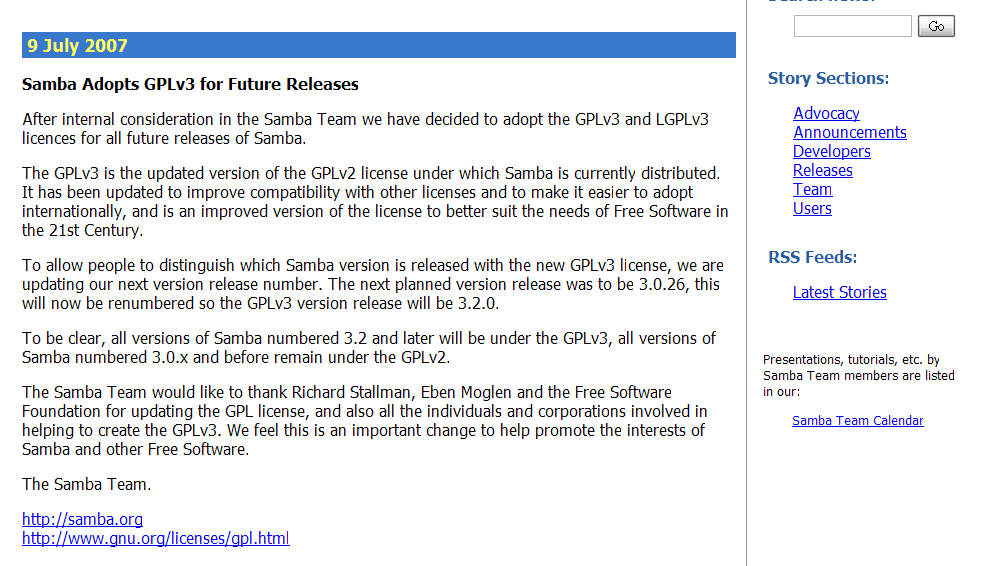

感謝您對「自由軟體鑄造場」的支持與愛護，十多年來「自由軟體鑄造場」受中央研究院支持，並在資訊科學研究所以及資訊科技創新研究中心執行，現已完成階段性的任務。 原網站預計持續維運至 2021年底，網站內容基本上不會再更動。本網站由 Denny Huang 備份封存。
也紀念我們永遠的朋友 李士傑先生（Shih-Chieh Ilya Li）。
也紀念我們永遠的朋友 李士傑先生（Shih-Chieh Ilya Li）。
法律專欄  GPL-3.0 與 GPL-2.0 的異同比較與應用分析
GPL-3.0 與 GPL-2.0 的異同比較與應用分析
法律源地
 本網站法律源地提供相當多自由軟體授權與法律的資訊，歡迎您閱讀這些資訊。
本網站法律源地提供相當多自由軟體授權與法律的資訊，歡迎您閱讀這些資訊。
GPL-3.0 與 GPL-2.0 的異同比較與應用分析
建立日期 2012-07-19 14:30 最近更新在 2012-07-24 14:27
從 2007 年中 GPL-3.0 編撰完成之後，新版 GPL-3.0 與舊版 GPL-2.0 的差異就是一個常被拿出來討論的議題。理論上，我們可以用「更新與升級 (update & upgrade)」的角度來理解 GPL-3.0，也就是說，GPL-3.0 與 GPL-2.0 兩份新舊條款，在推動軟體自由（Software Freedom，註一）的本質方面是相同的，但因為成文時空背景的差異，新版條款就軟體自由的保障加入了補充手段，並試圖處理舊版條款在 1991 年時並未規範，且較為模糊以致多年來懸而未解的諸多爭議。而由於適用 GPL-3.0 的專案數量已逐年提升，故近年來詢問 GPL-3.0 與 GPL-2.0 授權差異與應用選擇的問題，較諸其成文之初有不減反增的趨勢，故本文將從 GPL-3.0 與 GPL-2.0 的比較立場出發，條列其在授權規則方面的變異，並進一步論述其在互動上如何相容，以讓讀者了解將原 GPL-2.0 授權專案升級為 GPL-3.0，或選擇新舊不同版本條款來接續開發時，有哪些應用上的優劣得失。 
{kind=link}
▲ 圖1：Samba 於 2007 年 7 月 9 日宣佈未來版本皆將改以 GPL-3.0 進行散布：https://news.samba.org/announcements/samba_gplv3/
【GPL-3.0 與 GPL-2.0 的異同比較】
GPL 各版授權條款主要的撰文者 Richard Stallman，於 2006 年參與自由開源軟體開發者歐洲會議（Free and Open Source Software Developers' European Meeting，註二）時表示：「GPL-3.0 所欲解決的，是 GPL-2.0 時代並未產生的授權爭議，而在所有的變動中又以下列四點最為重要：(1) 處理軟體專利的問題；(2) 增加與其他自由軟體的相容性；(3) 釐清程式源碼的定義及提供範圍；(4) 降低數位權利管理機制 (Digital Right Management, DRM) 的可能影響。」爾後於 2007 年中編撰完成的 GPL-3.0，也確實扣緊了上述這四大要點來發揮，以條列的方式來呈現，GPL-3.0 在下列項目與 GPL-2.0 有較大的差異（註三）：
- 用字通俗化－－GPL-3.0 揚棄過往專門的法律用語，改以通俗的詞彙來進行內容的撰寫，這是為了避免落入既定法律名詞的解釋框架與適用窠臼所做的調整。
- 列入 TiVo 反制條款並進一步釐清程式源碼的定義範圍－－TiVo 這款電視節目預錄裝置，採用 Linux Kernel 為其底層架構，其產品散布上雖有提供程式源碼，但一經修改過後則裝置即自動啟動 DRM 的箝制機制，造成修改軟體之後的裝置不能復行運作，Richard Stallman 認為此為軟體自由理念的惡意規避，故在 GPL-3.0 增列反制條款禁止之。GPL-3.0 的實際作法是就程式源碼的定義範圍進行補強，除了再次強調程式源碼應為程式撰寫者自行修改時所使用的最佳格式之外 (The “source code” for a work means the preferred form of the work for making modifications to it.)，其並進一步擴大了「使用者產品 (User Product)」對程式源碼的定義範圍，進一步說，嵌入 GPL-3.0 元件的產品，若是用於一般個人或是家居使用時，該產品除了基礎的程式源碼之外，必須在散布時一併提供相關的安裝資訊，諸如安裝流程、認證金鑰，及其他程式安裝與使用上所需的各式資訊，讓該 GPL-3.0 元件程式在經過使用者修改後，還能夠被重新編譯植入產品內取代原有的舊版元件。
- 增設專利授權與抑制條款－－為了處理軟體專利對自由開源軟體「改作權」的限制與干擾，GPL-3.0 增列專利授權與抑制條款，也就是說，GPL-3.0 專案的創作人與貢獻者自主寫進軟體的專利技術，在散布時會一併依 GPL-3.0 的運用規則，授權予收受軟體程式的後手，此一專利授權，並附有「禁止向後手聲明專利侵權的限制」。
- 增添自動復權機制－－GPL-2.0 明訂違反 GPL-2.0 授權義務性規定者，其依 GPL-2.0 取得的權利會自動終止：「Any attempt otherwise to copy, modify, sublicense or distribute the Program is void, and will automatically terminate your rights under this License.」然而，權利終止之後的相關效果，在 GPL-2.0 條款裡並沒有進一步的說明與解釋，所以是否只要違犯者自行改善就能夠自動復權？或是單次違反就造成永久失權？過去十年各方針對這個議題多有不同的看法與解釋。而在 GPL-3.0，便順勢增添了自動復權機制，其加設這類的違犯行為的自動補正機制，以及被動補正機制。原則上就是原專案的權利人若是同意違犯者的補正行為，則該違犯行為會被事後治癒，但若權利人明確表達不同意，則違犯者對該專案便不得再進行重製、修改、再授權，以及散布等行為，而會處於永久失權的狀態。
- 增加額外添附條款－－GPL-3.0 在第 7 條的地方登錄了 6 款的額外添附條款（additional term，註四）。所謂額外添附條款就是，該項條款本來並非 GPL-3.0 的主文內容，但散布者在散布專案時能額外的將其添附上去，而被視為授權主文的一部份，在其後的散布持續生效，除非該額外條款在符合移除條件的情形下，被更後手的散布者移除掉。透過此一機制，GPL-3.0 大為增加與其他自由開源授權條款之間的相容性（compatibility，註五），因為透過此 6 款額外條款，部份原與 GPL-3.0 不相容的專案，變得可以相容，例如 Apache-2.0 與 GPL-3.0 的相容配置便是這樣的例子。
- 確認容許 ASP 應用模式－－Application Service Provider 指的是軟體專案的程式碼並未實際散布，但一樣能夠被執行來發揮功能，例如透過網際網路的遠端模式來提供服務，此種應用模式依 GPL-2.0 的文義解釋並不需要提供程式源碼，然亦因是否符合軟體自由的提倡立場而引發爭議，GPL-3.0 明文確認延續此一寬鬆機制，但自由軟體基金會亦於 2007 同年度，一併提出不容許 ASP 應用模式的孿生版本－AGPL-3.0，讓適用者能有自行選擇不同授權方案的機會（註六）。
【GPL-3.0 與 GPL-2.0 因授權拘束特性而不能直接相容】
然而，此一升級定位的 GPL-3.0，在授權規則方面卻是與 GPL-2.0 不能直接相容的！這是因為不論是 GPL-3.0 或 GPL-2.0，其皆內含強烈的授權拘束特性（註七），當使用者截取其程式碼，並用於和其他軟體元件結合為統一專案 (as a whole) 後，此後整個專案便受到授權選擇方面的拘束，而僅能以 GPL-3.0 或 GPL-2.0 的方式為釋出時的散布條款。此一 Copyleft 形式的向後拘束性，不論是 GPL-3.0 與 GPL-2.0 皆無兩致，所以若是 GPL-3.0 的程式碼與 GPL-2.0 授權的程式碼直接融合 (merge) 在一起，則 GPL-3.0 授權的程式碼會去拘束 GPL-2.0 授權的程式碼，反之亦然，故以 GPL-3.0 與 GPL-2.0 授權的軟體元件，並沒有辦法對彼此進行程式碼的直接融合。Richard Stallman 表示自由軟體基金會也曾想過是否直接在 GPL-3.0 的授權文字加註一條「GPL-3.0 授權程式碼與 GPL-2.0 授權程式碼互不影響授權狀態」的除外條款，以解決這個問題，但是實際評估後，這樣的作法並不符合法律授權明確性的原則，因為最初的 GPL-2.0 並沒有這樣的聲明，所以即使 GPL-3.0 加註這條「向下版本相容」的但書，也並不能夠拘束到曾以 GPL-2.0 釋出其程式碼的各個著作權人，所以，此種明文設定相容機制的方式，僅能實踐在新推出的 GPL-3.0 與 AGPL-3.0 之間（註八），而不及於 1991 年即成文的 GPL-2.0。目前，Richard Stallman 表示，若非程式碼直接融合、連結，或是元件高度相依的互動狀況，那麼 GPL 各版本元件直接產生授權衝突的狀況是不會發生的，這就像是 TeX License 授權的 TeX 與 Apache-2.0 授權的 Apache HTTP Server，它們的授權狀態皆與 GPL-2.0 不相容，但過往一樣可以和 GPL-2.0 授權的 Linux Kernel、Bash，以及 GCC 運作在同一個作業環境下，而不會產生授權衝突，Richard Stallman 認為這些元件在運作上本就是獨立的，不會干擾到彼此的授權狀態，所以 GPL-3.0 與 GPL-2.0 授權元件的互動模式，也一樣可以循這樣的途徑來解決（註九）。
不過，這樣的解釋方式仍然處理不了 GPL-3.0 與 GPL-2.0 授權元件，在連結與結合 (link & merge) 運用時會產生的授權衝突。所以若要釜底抽薪的徹底解決這個問題，自由軟體基金會的立場是希望原 GPL-2.0 專案的著作權人，能夠以權利人的地位，將專案改以「GPL-3.0 及其後版本 (GPL version 3 or later versions, GPL-3.0+)」的方式進行授權。這樣的好處是直接為原以 GPL-2.0 授權的專案，帶入 GPL-3.0 及其後更新版本的授權相容性，並且可以幫助專案的著作權人，利用 3 版的規定解決一些 2 版時期並未規範與漏未關注的爭議。但是，從上述表列的差異來看，GPL-3.0 與 GPL-2.0 雖然理念相同，但許多智慧財產權上的相關處理卻有著很大的不同。那麼，從權利人的立場來看，許多 GPL-2.0 專案的開發者常會自問這樣的問題：「要不要將專案升級為 GPL-3.0 授權，又、如何的升級選擇才是最佳配置呢？」或者，取用他人 GPL 專案來進行加值開發的應用者，也會自問：「究竟哪一版本的 GPL 授權元件最符合產品的販售模式及未來發展呢？」
【GPL-3.0 與 GPL-2.0 的應用分析】
這些問題，依專案開發者與應用者的立場不同，而可能會有分析策略上的差異。對於 GPL-2.0 專案開發者的建議是：應分析該專案本身究屬獨立運作型的軟體專案，或是相依度較高的軟體專案，再依獨立性與相依性來決定 GPL 授權條款的適用版本；而對於 GPL 授權元件的應用者而言，基礎的建議是：應審視該專案未來的運用，是否對於 DRM 或軟體專利設有個別佈局，並評估對於 GPL-3.0 其他的新設機制，有無不能適用的難處。
首先，從自由開源軟體專案的開發面來看，一個開源專案是否能夠茁壯，除了吸引更多的參與者加入開發之外，還要考量該專案與其他專案之間的相依性。所以若是該專案具有運作上卓越的獨立性，其他元件多相依於它，例如 Linux Kernel，則升級與否便取決於 GPL-3.0 新設機制，是否能給這個 GPL-2.0 授權專案帶來加分的效果。從這點來進行分析，固然目前 Linux Kernel 因 DRM 機制的考量及權利人眾多意見較難統合的理由，而並沒有積極進行 GPL 版本升級的規劃，但觀之 Samba 與 GCC 這兩個重要專案，則在考量到 GPL-3.0 在授權相容性方面的優勢後，不約而同地將專案的授權方式由原先的 GPL-2.0 改為 GPL-3.0（註十）。但進一步看，若是專案本身並不具有強勢主導的獨立性，或是規劃上要與其他重要的自由開源軟體專案進行運作上的互動，那麼此一專案在授權選擇上，便須考量其他專案的授權狀態來決定自身的升級方式，例如與眾多插件、模組互動頻繁的 Drupal CMS，便在 7.2 之後的版本，將專案由 GPL-2.0，改為以「GPL-2.0 及其後版本 (GPL version 2 or later versions, GPL-2.0+)」的方式進行散布，如此一來，使用者將可視需求將 7.2 版之後的 Drupal，改以 GPL-3.0 或其後更新版本的方式進行運用，以增進 Drupal 與其他重要插件、模組之間的相容性，例如以 AGPL-3.0 授權的 CiviCRM 模組，便可在此配置之下與 Drupal 的程式主框架進行相容，而不會有授權衝突方面的問題。
然後，從自由開源軟體專案的應用面來看，則應審視該專案在 DRM、軟體專利佈局，與 GPL-3.0 新設機制方面的細部分析。因為從實而論，自 GPL-3.0 推出之後，許多著名商業公司是採取先行觀望的態度，並不敢遽以採用此一新穎的授權模式，例如國外嵌入式車載系統推動聯盟 GENIVI(https://www.genivi.org/) 於訪談記錄中透露，部份車載智慧系統研發廠商的內部政策，是在開發上採行隔離 GPL-3.0 授權元件的策略。因為依據 GPL-3.0 對「使用者產品」的定義，該類產品的販售者必須將軟體系統的安裝資訊與認證金鑰一併提供予消費者，研發商認為此一失去認證金鑰主控權的要求，可能會加重自身於車禍事故發生時的責任分擔，故在風險評估確認之前，便先採取迴避使用 GPL-3.0 授權元件的開發政策。再論及軟體專利佈局，部份商業公司其營利模式與專利運用習習相關，故策略上可能會在核心專利技術相關的產品上，對 GPL-3.0 授權元件採取迴避使用的策略，而對不影響核心專利的其他產品，才改採開放使用的方針。而除了 DRM 與軟體專利的考量之外，部份專案的權利人也可能因為某些 GPL-3.0 新設機制，例如自動復權或是永久失權等等效應，而暫緩對 GPL-3.0 授權元件的採用規劃。
從實而論，自由開源軟體具有不可撤回 (irrevocable) 的特性，故從專案的開發角度，在授權升級與選擇的議題上，應是考究新版授權方式對專案的未來發展，能帶來哪些優勢與劣勢，才去進行下一步的授權調整，因為自由開源軟體專案的授權方式一經升級變更之後便無法撤回，故建議是事前先就通盤狀況進行考量再行為之，會是較為謹慎而穩當的調整方式；而從專案的應用角度，使用者以特定授權條款版本取得的程式碼，不論該專案日後的授權策略如何變換，這些已經取得的程式碼，總是能夠持續以昔時版本的授權方式進行運用，不會因為該專案新發行版本一有授權變動，就必須隨之進行調適與更換，從這樣的授權特性來看，自由開源軟體專案在應用與接續開發上，具有不被封閉控制的安定性，所以應用端在選用之初，也應該就同一專案不同時期的授權方式進行細部分析，以挑選出最符合應用方針的適切版本。可以說，自由開源軟體專案在授權條款版本的升級與選擇，並不一定是全盤的好，或是全盤的壞，端視專案的開發者與應用者，從哪一個角度進行權衡與分析，並應進而據此，做出最符合自身需求的決策及選擇。
註一：關於軟體自由 (Software Freedom) 進一步的說明，可參照拙著「自由軟體爭逐什麼樣的自由？」：https://www.openfoundry.org/tw/legal-column-list/509-2010-07-15-10-46-50。
註二：Richard Stallman 的發表原文，可參閱右列網址：https://www.ifso.ie/documents/rms-gplv3-2006-02-25.html。
註三：GPL-3.0 創設了哪些 GPL-2.0 所沒有的授權機制，可參閱葛冬梅「在四大自由精神之下強化的 GPL-3.0」：https://www.openfoundry.org/tw/legal-column-list/1108--gpl3。
註四：並非所有的額外條件皆可列入 GPL-3.0 主文成為「額外添附條款」，而是使用者可以在 GPL-3.0 第 7 條的 6 個條件中任擇 1 至 6 項成為額外添附條款的內容，這 6 項額外條件分別為：(1) 自行調升擔保條款、(2) 散布顯名聲明條款、(3) 修改後版本另名條款、(4) 廣告背書禁止條款、(5) 商標明示保留條款，以及(6) 前手責任禁添條款。
註五：自由開源軟體授權相容性的進一步解說，可參照林珈宏「從 Copyleft 看自由開源軟體授權相容性」：https://www.openfoundry.org/tw/legal-column-list/8710-introducing-license-compatibility-via-copyleft-mechanism。
註六：之所以稱 AGPL-3.0 為 GPL-3.0 的孿生版本，那是因為除了第 13 款的內容之外它們完全相同，而這不同的第 13 款，是特別律定 AGPL-3.0 授權程式經過修改過後，即便是以網路傳輸資訊的方式來提供服務，也會被擬制為程式碼的散布行為，服務的提供者因此必須，應服務使用者的要求，提供該 AGPL-3.0 改作元件的程式源碼。
註七：關於 GPL 相關授權拘束性 (License Inheritance) 的進階說明，可參照拙著「GPL 條款對於衍生程式的判定標準與其授權拘束性的擴散範圍」：https://www.openfoundry.org/tw/legal-column-list/8446-the-license-inheritance-bounds-of-gnu-gpl-01。
註八：此一預設的相容機制出現於 GPL-3.0 第 13 條第 1 項，以及 AGPL-3.0 第 13 條第 2 項，這些授權文字明訂 GPL-3.0 與 AGPL-3.0 授權的程式碼可以透過連結或是結合 (link or combine) 的方式進行互動，卻不會干擾彼此原先的授權狀態，然須特別注意的是，若是 GPL-3.0 授權的元件與 AGPL-3.0 授權的元件結合運作後提供遠端應用服務，則該 GPL-3.0 授權的程式碼便連帶適用 AGPL-3.0 在遠端應用方面的特別規定，須一併將元件的程式源碼提供予網路服務的使用者。(The terms of this License will continue to apply to the part which is the covered work, but the special requirements of the GNU Affero General Public License, section 13, concerning interaction through a network will apply to the combination as such.)
註九：Richard Stallman 對於 GPL-3.0 與 GPL-2.0 授權相容性的看法，可參閱其專文「Why Upgrade to GPL Version 3」：https://gplv3.fsf.org/rms-why.html/。
註十：Samba 專案升級至 GPL-3.0 的說明頁面：https://news.samba.org/announcements/samba_gplv3/；GCC 專案升級宣佈及例外條款的說明頁面：https://www.fsf.org/news/2009-01-gcc-exception/。
您也許有興趣閱讀以下文章:
- LGPL-3.0 訴訟案例解析：FreeAdhocUDF 侵權和解案 - 2013-05-27
- 因應網路時代與雲端應用而生的 AGPL-3.0 授權條款 - 2012-09-24
自由軟體鑄造場電子報 : 第 200 期 GPL-3.0 與 GPL-2.0 的異同比較與應用分析
標籤: Copyleft, DRM, FSF, Linux Kernel, 專利, 軟體專利, 復權, 授權拘束性, 授權相容性, GPL, GPL2, GPL3, AGPL,
分類: 法律專欄
自由軟體鑄造場 製作 最佳瀏覽狀態：IE7或Firefox2.0以上 (建議使用Firefox) ‧ 解析度1024*768
E-Mail：contact@openfoundry.org Address：台北市南港區研究院路2段128號 中央研究院資訊科學研究所 . 隱私權條款. 使用條款
E-Mail：contact@openfoundry.org Address：台北市南港區研究院路2段128號 中央研究院資訊科學研究所 . 隱私權條款. 使用條款